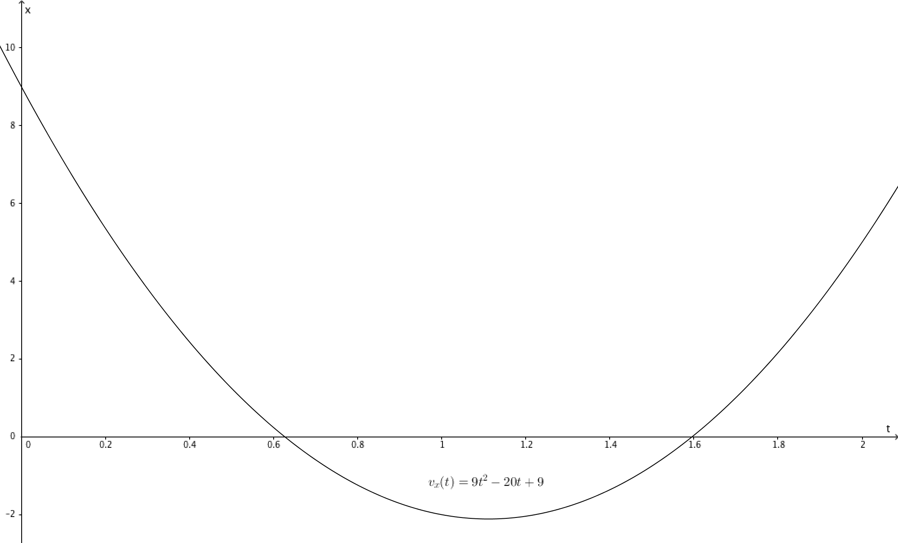
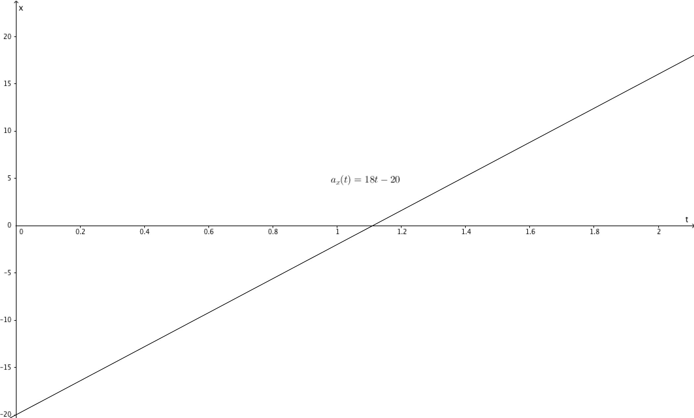

Problem 2.57
The position of a paritcle between $t$ = 0 and $t$ = 2.00 s is given by $x(t)$ = (3.00 m/s$^3$)$t^3$ - (10.0 m/s$^2$)$t^2$ + (9.00 m/s)$t$. (a) Draw the $x$-$t$, $v_x$-$t$, and $a_x$-$t$ graphs of this particle. (b) At what time(s) between $t$ = 0 and $t$ = 2.00 s is the particle instantaneously at rest? Does your numerical result agree with the $v_x$-$t$ graph in part (a)? (c) At each time calculated in part (b), is the acceleration of the particle positive or negative? Show that in each case the same answer is deduced from $a_x(t)$ and from the $v_x$-$t$ graph. (d) At what time(s) between $t$ = 0 and $t$ = 2.00 s is the velocity of the particle instantaneously not changing? Locate this point on the $v_x$-$t$ and $a_x$-$t$ graphs of part (a). (e) What is the particle's greatest distance from the origin ($x$ = 0) between $t$ = 0 and $t$ = 2.00 s? (f) At what time(s) between $t$ = 0 and $t$ = 2.00 s is the particle speeding up at the greatest rate? At what time(s) between $t$ = 0 and $t$ = 2.00 s is the particle slowing down at the greatest rate? Locate these points on the $v_x$-$t$ and $a_x$-$t$ graphs of part (a).
Solution
Part (a) is simply drawing $x$-$t$, $v_x$-$t$, and $a_x$-$t$ graphs. To do this, we have to find the specified graphs through differentiation. Recall:
$$v_x(t)=\frac{\hbox{d}}{\hbox{d}t}x(t)$$ $$a_x(t)=\frac{\hbox{d}^2}{\hbox{d}t^2}x(t)$$We are given $x(t)$, so finding $v_x(t)$ and $a_x(t)$ is easy:
\begin{split} x(t) & = 3t^3-10t^2+9t\\\\ v_x(t) & = \frac{\hbox{d}}{\hbox{d}t}x(t)\\ & = 9t^2-20t+9\\\\ a_x(t) & = \frac{\hbox{d}^2}{\hbox{d}t^2}x(t)\\ & = 18t-20 \end{split}Graphing this, we get:



Part (b) asks for times when the particle is instantaneously at rest, meaning $v_x(t)$ = 0. Since $v_x(t)$ is a quadratic, we can solve this using the quadratic formula:
\begin{split} v_x(t) & = 0\\ 9t^2-20t+9 & = 0 \end{split}\begin{split} t & = \frac{-(-20)\pm\sqrt{(-20)^2-4(9)(9)}}{2(9)}\\ & = \frac{20\pm\sqrt{76}}{18}\\ & = 0.63\hbox{ s and } 1.60\hbox{ s} \end{split}
This is confirmed when we check the graph of $v_x(t)$; there are roots in the corresponding values of $t$.
The equation for acceleration is $a_x(t)=18t-20$. To check if the acceleration is positive or negative for each of the values calculated in (b), plug in the values:
\begin{split} a_x(0.63)&=18(0.63)-20=-8.66\\ a_x(1.60)&=18(1.60)-20=8.80\\ \end{split}So, we know that the acceleration is negative at t = 0.63 and positive at t = 1.60.
Part (d) asks for the time(s) when the velocity is not changing instantaneously. The velocity is not changing instantaneously when the acceleration is zero. Therefore, set $a_x(t)$ to 0 and solve for t:
\begin{split} a_x(t)&=0\\ 18t-20&=0\\ t&=\frac{10}{9}\hbox{ s} \end{split}This point is where the $a_x(t)$ graph crosses the $x$-axis, which is also where the minimum of the $v_x(t)$ graph is.
The particle has the greatest distance from the origin when t = 0.63. You can see this by searching for the maximum of the $x(t)$ graph for t $\in$ [0, 2]. To calculate the distance, plug 0.63 into $x(t)$:
\begin{split} x(0.63)&=3(0.63)^3-10(0.63)^2+9(0.63)\\ &=2.45\hbox{ m} \end{split}For values for t where t $\in$ [0, 2], the particle speeds up at the greatest rate when the acceleration is greatest (and positive) and velocity is positive or when acceleration is smallest (and negative) and velocity is negative, which is when t = 2, and slows down at the greatest rate when the acceleration is smallest (and negative) while the velocity is positive or when acceleration is greatest (and positive) while velocity is negative. In this case, it is t = 0.